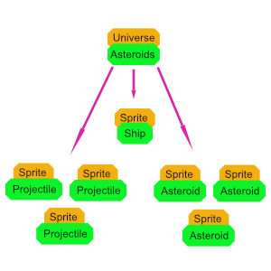

RETURN TO INDEX
LESSON 7: INTRO TO GAME DESIGN
The purpose of this lesson is to take a dive right into creating games. We will take a look at some game design principles, theory, and some classes that will assist with the building process. Then we will build a retro game of asteroids.
"Two things are infinite: the universe and human stupidity; and I'm not sure about the universe."
~ Albert Einstein
CODE
The code for this section is too long to include in the page.
Open link to the program in the example section, right click the page, and select view source. From this view you can view the HTML and all linked CSS, JAVASCRIPT, and assets.
The link to barebones.js will provide you with the complete library code.
The link to asteroids.js will provide you with the example code.
NOTE: [CMD or CTRL] + U will usually view page source as well.
QUEUES
As you delve deeper into the world of game design, you will want to become familiar with some math and computer science(CS) concepts that will really improve your abilities and understanding.
One common CS concept is that of a queue. The definition is specific and complex for CS, that is not important for this lesson.
A queue is essentially a list of things that may happen or exist in a specific order.
A queue and a stack are very similar, but have differences.
You can compare a queue to a line at the grocery store. The person at the front of the line is served, and then they leave the line, the line is then one person shorter.
People can enter or leave the line at any time, but they can only be served if they are at the front of the line.
Queues in JAVASCRIPT are usually represented as arrays.
barebones.js uses a queue like structure to offset the addition of new objects into a universe to the time slot between update/render propagations. This avoids errors stemming from the change in tree structure while iterating from occurring.
You should be aware however that if you have an instance of list, there may still be objects within it's queue that need to be cleared or handled if you are for instance resetting.
You can implement queue or stacks of your own to represent whatever you like. If you remember from lesson 2 of this tutorial, you used a work stack to represent the characters that still needed to be added to the DOM in sequence over time.
TRIGONOMETRY
When it comes to games, often times you are going to want to represent angles, direction, or circles.
For instance, for our asteroids game, you want to shoot a projectile in the direction your ship's cannon is facing, but how?
This is where a little trigonometry becomes un-avoidable, sorry.
However unlike in academia, you don't need years and tears to understand trigonometry at it's core. You probably only need about five minutes and this section.
AUTHOR NOTE: It is my opinion that most of the symbols, jargon, and methodology in traditional mathematics teaching is FLUFF, to put it in kind words. The actual math is pretty simple and easy to break down and understand if you think about it. Academics PURPOSEFULLY complicate the process of learning math to make it so that they, as academics, have value. From their perspective, if everyone knew math, they wouldn't be special anymore. Well I say to them: "Too bad, you're not special anymore and you should feel bad for making math such a pain in the a$$ for so many people, including myself."
If you are entirely opposed to learning any math, I get it. Though I warn against putting off the inevitable; if you so wish, you can skip this section and complete the rest of the lessons without much trouble. The Vector class of barebones.js abstracts the trigonometric functions into a couple methods that are simple to use.
So first to explain the distance calculation used up until this point.
The Pythagorean theorem states that for a right triangle "a squared plus b squared is equal to c squared."
Cool story but who cares?
Well this comes in REAL handy when you want to know the distance between two points.
Say you wanted to know the distance between point A and point B in the image above.
Side b is the difference(subtraction) between the x values of point A and point B.
Side a is the difference(subtraction) between the y values of point A and point B.
Then you just imagine that the two points together make a right triangle, which they always do, and apply the theorem. Then get the square root of the output.
distance(a, b) {
const
distance_x = a.x - b.x,
distance_y = a.y - b.y,
dist_x_squared = distance_x * distance_x,
dist_y_squared = distance_y * distance_y,
sum = dist_x_squared + dist_y_squared,
hypotenuse = Math.sqrt(sum);
return hypotenuse;
}
The length of the hypotenuse returned is in fact the distance between the two points! F#$king mathemagics!
Then there is the unit circle: The unit circle is an imaginary circle around any point that has a radius of one unit. In canvas a unit is a pixel before canvas or other scaling.
The vector coordinates for any point on the unit circle represent the direction vector from the center of the circle along the line to that point on the circle outward(the white line marked 1 in the image above).
The next thing you might want to do is calculate the direction vector on the unit circle from the rotation of a universe_object. You want to know what direction the ships cannon is facing so that when it fires the projectile goes in that direction.
The solution is to use sine and cosine of the angle to acquire the direction vector.
NOTE ON ANGLES: In math and JAVASCRIPT, angles are usually represented as a number of RADIANS. However
humans usually use degrees. There are 360 degrees in a circle, and (Math.PI * 2) radians in a circle. To
convert from one to another:
const
radians_to_degrees: rads => rads * (180 / Math.PI),
degrees_to_radians: degs => degs * (Math.PI / 180);
WARNING: For whatever reason, the direction on the unit circle for a rotation angle of 0 is straight to the RIGHT. Intuition suggests it should be straight UP. Keep this in mind when performing your calculations, you may need to shift 90 degrees or ((Math.PI * 2) / 4) radians in order to face straight up for zero rotation.
Looking at the image of the unit circle you can see that the cosine or sine of an angle in radians represent the x and y coordinates, respectively, on the unit circle, of the direction vector from an angle in radians. READ THIS AGAIN.
What this means is that you can input an angle in radians, and get back a direction vector. That is exactly what the method of the Vector class does.
static radians_to_unit_circle_vector(rads = 0) {
return new Vector(Math.cos(rads), Math.sin(rads));
}
Keep in mind that the direction vector returned will always be within the range of 0 to 1. This may not be the velocity that you desire. If you want a higher or lower magnitude(speed) for your velocity, just multiply the direction vector by a scaling factor.
const
angle = Math.PI,
direction = Vector.radians_to_unit_circle_vector(angle),
velocity = direction.times(2, 2);
console.log(angle);
// OUTPUTS 3.141592653589793
console.log(direction);
// OUTPUTS Vector { x: -1, y: 1.2246467991473532e-16 }
console.log(velocity);
// OUTPUTS Vector { x: -2, y: 2.4492935982947064e-16 }
NOTE: Sometimes javascript will represent very large, in length of decimal or integer digits, numbers, using the exponent notation.1.2246467991473532e-16This just means that the number in its natural form would take more bits that are available by default for JAVASCRIPT to store a number. So JAVASCRIPT does it's best to keep the percision of the number to some extent.
The number above is just really small, and so would have a bunch of leading zeroes.
(1.2246467991473532e-16).toFixed(20); // OUTPUTS '0.00000000000000012246'
One last thing you may want to do in the scope of these applications is to acquire a rotation angle in radians FROM a direction vector.
For instance you wanted to know the angle of rotation that your ship would need in order to face an incoming asteroid.
NOTE: The direction vector from one point to another point can always be acquired by subtracting one from the other. Order defines direction to or from.
The way would be to acquire the direction vector between the two points.
Then you would use the arc-tangent-2 function on the direction vector to acquire the angle.
const
ship_position = new Vector(50, 50),
asteroid_position = new Vector(200, 250),
direction_vector = asteroid_position.minus(ship_position);
console.log(Math.atan2(direction_vector.y, direction_vector.x))
// OUTPUTS 0.9272952180016122
NOTE: Notice how the y value comes before the x in atan2.
Remember this is the angle from straight RIGHT on the unit circle, clockwise, in radians.
The barebones.js Vector class includes a method to do this exact thing:
static radians_from_vector(vec, b) {
const temp = Vector.require_vector_or_numeric(vec, b);
return Math.atan2(temp.y, temp.x);
}
Or the instance method:
angle_to(vec, b) {
const temp = Vector.require_vector_or_numeric(vec, b);
return Vector.radians_from_vector(temp.minus(this));
}
So the earlier example would look like this:
const
ship_position = new Vector(50, 50),
asteroid_position = new Vector(200, 250),
direction_vector = asteroid_position.minus(ship_position);
console.log(ship_position.angle_to(asteroid_position));
// OUTPUTS 0.9272952180016122
That's it for the trigonometry!
That wasn't too bad right. That covers most of the trigonometric functionality you would want for a 2D game and honestly the main points of trigonometry as a whole!
Screw those old mathematicians who over-complicated everything, it isn't that hard once you break it down in normal terms.
LOADING ASSETS
The loading image and audio assets in the web browser environment can take time.
Since you don't want the application, which depends on these assets, to start up until after the assets have loaded, you have to define a loading protocol.
This is exactly what the AssetManager class of barebones.js does.
class AssetManager extends List {
async load_all(items = []) {
if (!(items instanceof Array)) {
throw new Error(`ASSET MANAGER SAYS: LOAD ALL ACCEPTS AN ARRAY BUT GOT: ${items}`);
}
items = items.filter(v => v.src instanceof String && v.type instanceof String);
const promises = items.map(v => this.load(v));
const assets = await Promise.all(promises);
this._children.push(...assets);
return assets;
}
async load(options) {
const { src, type } = options;
const id = options.id || Symbol();
if (type && type.toUpperCase && type.toUpperCase() === 'AUDIO') {
const fetched = await fetch(src);
const array_buffer = await fetched.arrayBuffer();
const audio_buffer = await this.audio_context.decodeAudioData(array_buffer);
const asset = { buffer: audio_buffer, type: type.toUpperCase(), id };
this._children.push(asset);
return asset;
}
else if (type && type.toUpperCase && type.toUpperCase() === 'IMAGE') {
const asset = new Image();
const load_promise = new Promise(resolve => asset.addEventListener('load', resolve));
asset.src = src;
await load_promise;
const sheet = new SpriteSheet({
columns: options.columns,
rows: options.rows,
image: asset,
activate_collision_mask: options.activate_collision_mask ?? false,
parent: this,
id
});
this._children.push(sheet);
return sheet;
}
throw new Error(`ASSET MANAGER SAYS: INVALID ASSET TYPE: ${type}`);
}
}
The class is simple enough.
It has two async methods, load and load_all.
Load takes in an options object that should have the type of asset(image or audio), the source of the asset, and an optional id for the asset, and any other parameters such as columns and rows for a spritesheet, as covered in lesson 3.
For image assets an instance of SpriteSheet is constructed asyncrounously.
For audio tracks the assets is loaded and the audio buffer decoded and stored with the asset for later use.
NOTE: The loading of assets should only be done once, in an async initialize method extension of the universe root instance.
async initialize() {
this.ship_sheet = await this.assets.load({
src: DATA_URLS.SHIP,
id: 'ship',
type: 'image'
});
}
One last feature of the image asset loading is the collision mask flag. If you enable it, per pixel collision detection will be enabled for that asset. More on that in the sections to come.
WARNING: Activating a collision mask on an image asset that violates CORS will throw an error. See section on CORS.
async initialize() {
this.ship_sheet = await this.assets.load({
src: DATA_URLS.SHIP,
id: 'ship',
type: 'image',
activate_collision_mask: true
});
}
You can also see that there is a load_all method that accepts an array of asset options objects, loads and returns an array of loaded assets. This method might be preferred for increased performance as the assets are loaded simultaneously instead of sequentially.
Image assets are stored as instances of the barebones.js SpriteSheet class:
class SpriteSheet extends Interface {
constructor(options) {
super(options);
this.image = this._options.image || null;
if (!this.image || !this.image.complete || !this.image.src) {
throw new Error(`SPRITESHEET SAYS: NEED A LOADED IMAGE BUT GOT: ${this.image}`);
}
this.columns = help.clamp(this._options.columns || 1, 1, Infinity);
this.rows = help.clamp(this._options.rows || 1, 1, Infinity);
this.refresh_collision_mask();
}
refresh_collision_mask(scale, rotation) {
if (this.root.canvas_manager.offscreen_canvas && this._options.activate_collision_mask) {
this.collision_mask = this.root.canvas_manager.create_collision_mask(this.image, scale, rotation);
}
}
get_alpha(x, y, index) {
if (!this.collision_mask) {
return 255;
}
const idx =
Math.floor(
((Math.floor(index / this.columns) % this.rows) * this.height + y)
*
this.image.width + ((index % this.columns) * this.width + x)
);
if (idx < 0 || idx > this.collision_mask.length) {
return 0;
}
else {
return this.collision_mask[idx];
}
}
get width() {
return this.image.width / this.columns;
}
get height() {
return this.image.height / this.rows;
}
get element_quantity() {
return this.columns * this.rows;
}
}
SpriteSheet is a utility class that encapsulates the logic for slicing spritesheet image assets and some management of collision masks. More on that later.
The important thing to remember, like divisions_x and divisions_y in lesson 3 of this course, spritesheets accept columns and rows that represent how many element the image asset has within it. This defaults to 1 by 1 if no options are input.
ADVANCED COLLISION DETECTION
There will probably be times when the collision between rectangles and circles is not accurate enough to represent your universe_objects.
For instance, the ship of the asteroids game is not a rectangle or a circle. If you used rectangle bounding box collision with the asteroids, then the collisions would happen before the asteroid and the ship ever ACTUALLY collide.
The collision would occur when the sprites invisible rectangles collide, unreliable and the player is going to notice the bug.
Similarly, circles would be problematic because no matter how you size the circle around or within the ship, false collisions will be registered, or real collisions will be missed.
Bounding boxes and circles only work properly when the shape they represent is circular or rectangular.
So, what can you do to fix the problem?
This is a time when you might want to use per pixel collision detection(PPCD).
PPCD is essentially the process of checking every pixel between the overlapping bounding box rectangles to see if there is a collision at the pixel level.
PPCD is an expensive process all around so keep that in mind. Too many PPCD sprites can cause the game to slow down.
The PPCD logic is something that is built into barebones.js already, however it is useful to understand how it works.
In order to enable PPCD for an image asset simply pass the activate_collision_mask property into the options object during loading.
async initialize() {
this.ship_sheet = await this.assets.load({
src: DATA_URLS.SHIP,
id: 'ship',
type: 'image',
activate_collision_mask: true
});
}
The spritesheet will automatically attempt to render the image onto an offscreen canvas and read the pixel data, specifically the alpha channel(transparency), into something called a collision mask.
This collision mask represents the numeric solidness of the image in that state of scale and rotation.
Keep in mind that a sprite with rotation or scale changes live will have to generate a new mask with every frame. This is very expensive so rotation of PPCD sprites should be limited or avoided.
WARNING: In this current implementation of barebones.js, I the author did not feel that it would be fair to expect a student to study linear algebra in an INTRO to game design course. For this reason there are a few bugs in the PPCD for the library. Scaling does not work properly with PPCD sprites, period. Rotation only works with single component spritesheets, that is images with only one row and column, for PPCD. Finally since the methods for creating collision masks do not use in memory matrices, it is VERY expensive. The future of this library would include a matrix class and PPCD built upon a transformation matrix instead of drawing to an offscreen canvas. This is an opportunity for extension if you are feeling up to it as a student. Otherwise just keep in mind these things while using PPCD.
If you look closely at the asteroids game, PPCD is used, but the only object that can rotate is the ship, therefore limiting the recreation of collision masks. Also the images are all at their natural scale and the ship is a single component sprite.
Just remember that in order ot activate PPCD, enable it in the loading of the spritesheets.
The next section on CORS is a required read if you want to use PPCD.
CORS
CORS stands for Cross Origin Resource Sharing.
CORS can be a real pain in the asterisk.
CORS will only be an issue in this course when it comes to PPCD. If you are not using PPCD, this won't matter to you.
CORS is a security protocol for web browsers that attempts to reduce the risk of malicious data entering the users computer via images and other assets.
So in essence what happens is that if you try to access the pixel data from a canvas that uses images that were loaded from a source that is not considered SAME ORIGIN, the browser will throw a security error.
If an application is being served by a server, CORS headers can be set in conjunction with the crossOrigin attribute to get around the problem.
However, since the examples in this course are intended to be able to run LOCALLY, there will be a problem. Browsers consider images loaded from the file:// protocol(locally) to be of unsecure origin. What this means is that you will have to do some workaround if you want to use PPCD on images that exist locally on your machine.
DATA URLS TO THE RESCUE
If you convert your images and assets to DATA URL they will not be considered unsecure!
Data urls are just a way of encoding files into a string that is a URL. The whole file data exists within the url string.
If you look in the ASSOCIATED_FILES files directory of this course, you will find a tool called DATA_URL_GENERATOR.
The use of this tool is pretty easy. Just open the index.html in a browser. Use the file input to select the file you want to encode. Then copy and paste the url that is dumped to the page.
You can create a JAVASCRIPT file to hold all of your data url assets. In the asteroids game it is just a file called data_urls.js and it just contains one global DATA_URL object with all of the images needed for the game encoded as data urls.
const DATA_URLS = {
PROJECTILE: ``
};
You can then link in this file via script tag in your HTML BEFORE your game scripts.
<section class="asteroids-target"></section>
<script src="../../../../../BAREBONES/barebones.js"></script>
<script src="./data_urls.js"></script>
<script src="./asteroids.js"></script>
If you load your assets from these URLS, you will never get CORS errors! Hooray!
SPRITES
Sprites are a integral component to 2d game development. Essentially for barebones.js they are a universe_object that comes with all of the logic to render a spritesheet image asset.
A sprite could be a player, a background tile, the whole background image, an enemy, or any other universe_object that is an image or segment of an image.
The barebones.js Sprite class encapsulates all of the tricky bits of managing image objects in the universe.
class Sprite extends Interface {
constructor(options) {
options.universe_object = true;
super(options);
this.sprite_sheet = this._options.sprite_sheet || null;
if (this.sprite_sheet && !(this.sprite_sheet instanceof SpriteSheet)) {
throw new Error(`SPRITE SAYS: REQUIRES SPRITESHEET BUT GOT: ${this.sprite_sheet}`);
}
if (this.rotation !== 0 || !this.scale.equals(1, 1)) {
this.sprite_sheet.refresh_collision_mask(this.scale, this.rotation);
}
this._previous_rotation = this.rotation;
this._previous_scale = this.scale.duplicate();
this.frame_index = this._options.frame_index || 0;
this.origin = this._options.origin_getter && this[`origin_${this._options.origin_getter}`] || this.origin_center;
}
update() {
super.update();
if (this.rotation !== this._previous_rotation || !this.scale.equals(this._previous_scale)) {
this.sprite_sheet.refresh_collision_mask(this.scale, this.rotation);
this._previous_rotation = this.rotation;
this._previous_scale = this.scale.duplicate();
}
}
render() {
if (!this.visible) return;
this.root.canvas_manager.draw_image(
this.sprite_sheet.image,
this.universe_position,
this.rotation,
this.origin,
this.scale,
this.source_rectangle
);
}
collides_with(v) {
if (!this.visible || !v.visible || !(v instanceof Sprite) || !this.bounding_box.intersects_with(v.bounding_box)) {
return false;
}
if (this.sprite_sheet.collision_mask && v.sprite_sheet.collision_mask) {
const intersecting_rect = this.bounding_box.intersection(v.bounding_box);
const local = intersecting_rect.position.minus(this.universe_position.minus(this.origin));
const v_local = intersecting_rect.position.minus(v.universe_position.minus(v.origin));
for (let x = 0, j = intersecting_rect.size.x; x < j; x++) {
for (let y = 0, z = intersecting_rect.size.y; y < z; y++) {
if (
this.get_alpha(Math.floor(local.x + x), Math.floor(local.y + y)) !== 0
&&
v.get_alpha(Math.floor(v_local.x + x), Math.floor(v_local.y + y)) !== 0) {
return true;
}
}
}
}
else {
return true;
}
return false;
}
get_alpha(x, y) {
return this.sprite_sheet.get_alpha(x, y, this.frame_index);
}
get height() {
return this.sprite_sheet.height;
}
get width() {
return this.sprite_sheet.width;
}
get dimensions() {
return new Vector(this.width, this.height);
}
get bounding_box_center() {
return this.bounding_box.position.plus(this.origin_center);
}
get origin_center() {
return this.dimensions.divided_by(2, 2);
}
get origin_center_left() {
return new Vector(0, this.height / 2);
}
get origin_center_right() {
return new Vector(this.width, this.height / 2);
}
get origin_center_top() {
return new Vector(this.width / 2, 0);
}
get origin_center_bottom() {
return new Vector(this.width / 2, this.height);
}
get origin_top_left() {
return new Vector();
}
get origin_top_right() {
return new Vector(this.width, 0);
}
get origin_bottom_right() {
return this.dimensions.duplicate();
}
get origin_bottom_left() {
return new Vector(0, this.height);
}
get source_rectangle() {
const column_index = (this.frame_index % this.sprite_sheet.columns);
const row_index = (Math.floor(this.frame_index / this.sprite_sheet.columns) % this.sprite_sheet.rows);
return new Rectangle({
position: new Vector(
column_index * this.width,
row_index * this.height
),
size: new Vector(
this.width,
this.height
)
});
}
get bounding_box() {
const position = this.universe_position.minus(this.origin.times(this.scale));
return new Rectangle({
position,
size: this.dimensions.times(this.scale)
});
}
}
This is one of the bigger and more complex classes of the library, so here is a brief description of the main methods and getters, the rest are pretty self explanatory:
-
constructor
- ACCEPTS OPTIONS OBJECT THAT MUST CONTAIN A SPRITESHEET
- ACCEPTS AN ORIGIN GETTER METHOD FOR INITIALIZATION OF DEFAULTS TO ORIGIN CENTER
- ACCEPTS A FRAME INDEX REPRESENTING THE LEFT TO RIGHT INDEX OF THE SUB IMAGE OF THE SPRITESHEET IF APPLICABLE
- AUTOMATICALLY ENABLED AS UNIVERSE OBJECT
-
update
- AUTOMATICALLY DETECTS CHANGES IN ROTATION OR SCALE AND GENERATES A NEW COLLISION MASK AFTER CHANGES
- GENERATION OF NEW MASKS IS VERY EXPENSIVE -- ROTATION AND SCALING SHOULD BE MINIMIZED FOR SPRITES WITH MASKS
-
render
- ONLY RENDERS VISIBLE SPRITES
- AUTOMATICALLY EXECUTES THE RENDERING PIPELINE FOR IMAGES TAKING INTO ACCOUNT ALL FACTORS
-
collides_with
- METHOD DETERMINES IF TWO INSTANCES OF SPRITE COLLIDE
- FIRST DETERMINES IF THE BOUNDING BOXES INTERSECT
- THEN IF BOTH SPRITES HAVE COLLISION MASKS PER PIXEL COLLISION DETECTION IS PERFORMED FOR THE OVERLAPPING SECTION OF THE BOUNDING BOXES
- RETURNS BOOLEAN
-
get_alpha
- RETURNS THE ALPHA CHANNEL FOR A SPECIFIC COLUMN AND ROW OF A COLLISION MASK TAKING SHEET INDEX INTO ACCOUNT
-
get source_rectangle
- RETURNS THE SUB RECTANGLE OF THE SPRITESHEET BASED ON THE SHEET INDEX, COLUMNS AND ROWS
-
get bounding_box
- RETURNS THE RECTANGLE REPRESENTING THE POSITION AND SIZE OF THE IMAGE THAT WILL BE RENDERED ON THE CANVAS
Sprites are universe objects that manage their own position, velocity, rendering, and all other factors. They can be created like so:
class Ship extends Sprite { } class Asteroids extends Universe { async initialize() { this.ship_sheet = await this.assets.load({ src: DATA_URLS.SHIP, id: 'ship', type: 'image', activate_collision_mask: true }); this.ship = this.add(new Ship( { position: new Vector(this.canvas.width / 2, this.canvas.height / 2), sprite_sheet: this.ship_sheet, id: 'ship', } )); super.initialize(); } }
To add logic to the sprite, extend the class.
Remember that the only requirement is too pass in a loaded spritesheet during construction of a sprite.
AUDIO
The next thing that you are going to want to incorporate into your games is audio.
Audio can transform your cheap web game into an immersive and addicting experience!
In barebones.js, audio exists in two main forms: Generated and loaded.
Generated audio is audio created by code that is not loaded from a file.
Loaded audio is an audio track, or section within, that is loaded from an audio file.
REMINDER: Loaded audio tracks are handled by the AssetManager class just like image assets. See Loading Assets section.
Both forms can be played, modified, and looped.
barebones.js has two classes for the creation and management of audio, AudioManager and AudioToneList. They both utilise the Web Audio API for web browsers.
Lets go over the AudioManager class first and how to use it within a game.
class AudioManager extends List {
constructor(options) {
super(options);
this.audio_context = new AudioContext();
this._volume_node = this.audio_context.createGain();
this._volume_node.connect(this.audio_context.destination);
this._volume_node.gain.value = this._options.volume || 1;
this.notes = AudioManager._notes;
}
play_track(options = {}) {
const audio_buffer = options.audio_buffer,
track = this.audio_context.createBufferSource(),
volume = options.volume || 1,
gain = this.audio_context.createGain();
gain.gain.value = volume;
track.buffer = audio_buffer;
track.connect(gain);
gain.connect(this._volume_node);
track.start(options.delay || 0, options.offset || 0, options.duration);
return track;
}
loop_track(options = {}) {
const offset = options.offset || 0,
track = this.audio_context.createBufferSource(),
duration = options.duration || 0,
audio_buffer = options.audio_buffer,
volume = options.volume || 1,
gain = this.audio_context.createGain();
track.buffer = audio_buffer;
gain.gain.value = volume;
track.connect(gain);
gain.connect(this._volume_node);
track.loop = true;
track.loopStart = offset || 0;
track.loopEnd = (offset || 0 + duration || 0);
track.start(options.delay, options.offset);
return track;
}
play_tone(options = {}) {
const
tone = this.audio_context.createOscillator(),
gain = this.audio_context.createGain(),
scale = options.scale || 4,
note = options.note || 'C',
frequency = options.frequency || this.notes[scale][note] || this.notes[4]['C'],
delay = options.delay || 0,
volume = options.volume || 1,
duration = options.duration || 1,
type = options.type || 'square',
endless = options.endless ?? false;
gain.gain.value = volume;
tone.connect(gain);
gain.connect(this._volume_node);
tone.type = type;
tone.frequency.value = frequency;
tone.start(this.audio_context.currentTime + delay);
tone.stop(!endless ? (this.audio_context.currentTime + duration + delay) : Infinity);
return tone;
}
stop_tone(tone) {
tone.stop();
return tone;
}
get volume() {
return this._volume_node.gain.value;
}
set volume(v) {
help.require_numeric(v);
this._volume_node.gain.value = help.clamp(v, 0, 1);
}
/*_____CREDIT TO MDN FOR FREQUENCY TABLE_____*/
static get _notes() {
const n = [];
for (let i = 0; i < 9; i++) {
n[i] = [];
}
n[0]['A'] = 27.500000000000000;
n[0]['A#'] = 29.135235094880619;
n[0]['B'] = 30.867706328507756;
n[1]['C'] = 32.703195662574829;
n[1]['C#'] = 34.647828872109012;
n[1]['D'] = 36.708095989675945;
n[1]['D#'] = 38.890872965260113;
n[1]['E'] = 41.203444614108741;
n[1]['F'] = 43.653528929125485;
n[1]['F#'] = 46.249302838954299;
n[1]['G'] = 48.999429497718661;
n[1]['G#'] = 51.913087197493142;
n[1]['A'] = 55.000000000000000;
n[1]['A#'] = 58.270470189761239;
n[1]['B'] = 61.735412657015513;
n[2]['C'] = 65.406391325149658;
n[2]['C#'] = 69.295657744218024;
n[2]['D'] = 73.416191979351890;
n[2]['D#'] = 77.781745930520227;
n[2]['E'] = 82.406889228217482;
n[2]['F'] = 87.307057858250971;
n[2]['F#'] = 92.498605677908599;
n[2]['G'] = 97.998858995437323;
n[2]['G#'] = 103.826174394986284;
n[2]['A'] = 110.000000000000000;
n[2]['A#'] = 116.540940379522479;
n[2]['B'] = 123.470825314031027;
n[3]['C'] = 130.812782650299317;
n[3]['C#'] = 138.591315488436048;
n[3]['D'] = 146.832383958703780;
n[3]['D#'] = 155.563491861040455;
n[3]['E'] = 164.813778456434964;
n[3]['F'] = 174.614115716501942;
n[3]['F#'] = 184.997211355817199;
n[3]['G'] = 195.997717990874647;
n[3]['G#'] = 207.652348789972569;
n[3]['A'] = 220.000000000000000;
n[3]['A#'] = 233.081880759044958;
n[3]['B'] = 246.941650628062055;
n[4]['C'] = 261.625565300598634;
n[4]['C#'] = 277.182630976872096;
n[4]['D'] = 293.664767917407560;
n[4]['D#'] = 311.126983722080910;
n[4]['E'] = 329.627556912869929;
n[4]['F'] = 349.228231433003884;
n[4]['F#'] = 369.994422711634398;
n[4]['G'] = 391.995435981749294;
n[4]['G#'] = 415.304697579945138;
n[4]['A'] = 440.000000000000000;
n[4]['A#'] = 466.163761518089916;
n[4]['B'] = 493.883301256124111;
n[5]['C'] = 523.251130601197269;
n[5]['C#'] = 554.365261953744192;
n[5]['D'] = 587.329535834815120;
n[5]['D#'] = 622.253967444161821;
n[5]['E'] = 659.255113825739859;
n[5]['F'] = 698.456462866007768;
n[5]['F#'] = 739.988845423268797;
n[5]['G'] = 783.990871963498588;
n[5]['G#'] = 830.609395159890277;
n[5]['A'] = 880.000000000000000;
n[5]['A#'] = 932.327523036179832;
n[5]['B'] = 987.766602512248223;
n[6]['C'] = 1046.502261202394538;
n[6]['C#'] = 1108.730523907488384;
n[6]['D'] = 1174.659071669630241;
n[6]['D#'] = 1244.507934888323642;
n[6]['E'] = 1318.510227651479718;
n[6]['F'] = 1396.912925732015537;
n[6]['F#'] = 1479.977690846537595;
n[6]['G'] = 1567.981743926997176;
n[6]['G#'] = 1661.218790319780554;
n[6]['A'] = 1760.000000000000000;
n[6]['A#'] = 1864.655046072359665;
n[6]['B'] = 1975.533205024496447;
n[7]['C'] = 2093.004522404789077;
n[7]['C#'] = 2217.461047814976769;
n[7]['D'] = 2349.318143339260482;
n[7]['D#'] = 2489.015869776647285;
n[7]['E'] = 2637.020455302959437;
n[7]['F'] = 2793.825851464031075;
n[7]['F#'] = 2959.955381693075191;
n[7]['G'] = 3135.963487853994352;
n[7]['G#'] = 3322.437580639561108;
n[7]['A'] = 3520.000000000000000;
n[7]['A#'] = 3729.310092144719331;
n[7]['B'] = 3951.066410048992894;
n[8]['C'] = 4186.009044809578154;
return n;
}
}
Here is another brief rundown of the methods:
-
constructor
- ACCEPTS OPTIONS OBJECT WITH ONE OPTION, VOLUME, FROM 0 TO 1
- AUTOMATICALLY CREATES AN AUDIO CONTEXT AND CONNECTS NODES
-
play_track
- ACCEPTS AN OPTIONS OBJECT WITH:
- REQUIRED AUDIO BUFFER FROM ASSETS
- OPTIONAL VOLUME
- OPTIONAL DELAY BEFORE PLAYING SHOULD START IN SECONDS
- OPTIONAL OFFSET IN SECONDS WITHIN THE TRACK
- OPTIONAL DURATION OF PLAY WITHIN THE TRACK IN SECONDS
- PLAYS THE TRACK ONCE WITH THE SETTINGS SET
-
loop_track
- ACCEPTS AN OPTIONS OBJECT WITH:
- REQUIRED AUDIO BUFFER FROM ASSETS
- OPTIONAL VOLUME
- OPTIONAL DELAY BEFORE PLAYING SHOULD START IN SECONDS
- OPTIONAL OFFSET IN SECONDS WITHIN THE TRACK
- OPTIONAL DURATION OF PLAY WITHIN THE TRACK IN SECONDS
- PLAYS THE TRACK ON A LOOP FOREVER WITH THE SETTINGS SET UNTIL STOPPED
-
play_tone
- ACCEPTS AN OPTIONS OBJECT WITH:
- OPTIONAL SCALE FOR THE TONE
- OPTIONAL NOTE FOR THE TONE
- ALTERNATIVE OPTIONAL FREQUENCY FOR THE TONE
- OPTIONAL DELAY BEFORE PLAYING STARTS
- OPTIONAL DURATION OF PLAY
- OPTIONAL VOLUME
- OPTIONAL ENDLESS FLAG REPRESENTING ENDLESS PLAY UNTIL TOLD TO STOP
- OPTIONAL TYPE REPRESENTING THE WAVEFORM TYPE, DEFAULTS TO SQUARE, OTHER OPTIONS ARE SINE AND SAWTOOTH AMONG OTHERS
- PLAYS TONE FOR THE SPECIFIED TIME PERIOD WITH SETTINGS
-
stop_tone
- ACCEPTS ANY TONE OR TRACK REFERENCE AND STOPS PLAY IMMEDIATELY
-
get volume
- RETURNS THE GLOBAL VOLUME CHANNEL VALUE FOR THE AUDIO CONTEXT, 0 TO 1
-
set volume
- SETS THE GLOBAL VOLUME FOR THE AUDIO CONTEXT CLAMPED BETWEEN 0 AND 1
-
static get _notes
- RETURNS A TABLE OF NOTES LIKE THAT ON A PIANO OR KEYBOARD, CREDIT TO MDN
As far as playing back tracks go, an implementation might look like this:
class Asteroids extends Universe {
async initialize() {
this.crash_sound = await this.assets.load({
src: DATA_URLS.CRASH_SOUND,
id: 'crash_sound',
type: 'audio'
});
super.initialize();
}
}
class Asteroid extends Sprite {
impact() {
this.audio.play_track({
audio_buffer: this.root.crash_sound.buffer,
duration: 0.2,
offset: 0.1,
volume: 0.25
});
}
}
You just load up the track, then you use the this.audio.play_track method to play the track. In the code above, a very short subsection of the track is being played.
Looping a track works similarly.
const track = this.audio.loop_track({
audio_buffer: this.root.crash_sound.buffer,
duration: 0.2,
offset: 0.1,
volume: 0.25
});
await new Promise(resolve => window.setTimeout(resolve, 5000));
// WAIT FIVE SECONDS
track.stop();
The looping will continue until the stop method of the track itself is called.
This is all well and good, if you have audio assets ready to go, use them. However, there may be times when you want to generate audio it it's raw form.
Luckily the Web Audio API allows exactly this!
The applications are endless, you could create a musical app, or use machine learning to generate symphonies that no human could ever create.
For the purpose of 2d game design, generating some sounds through code can be a great way to add some audio effects, and in the context of retro games, some retro feel.
Tones of any valid frequency can be played via the this.audio.play_tone() method.
this.audio.play_tone({ duration: 0.5, frequency: 277, volume: 0.3 });
Tones from a table of keys like those on a piano work as well. As defined by note and scale.
this.audio.play_tone({ duration: 0.5, scale: 4, note: 'C', volume: 0.3 });
This will play middle C for half a second.
There are options to change the waveform of the oscillator node. Out of the box options are 'square' as default, 'sine', 'triangle', and 'sawtooth'. These change the way a tone sounds.
this.audio.play_tone({ duration: 0.5, scale: 4, note: 'C', volume: 0.3, type: 'triangle' });
You can play a tone endlessly by the endless flag. The note will play until the stop method is called on the note.
this.audio.play_tone({ endless: true });
So you can certainly play around and come up with some interesting sounds. However for the purpose of a game, you might want to compose some combinations of tones as sound effects or even music. This is where the AudioToneList comes into play.
class AudioToneList extends Interface {
constructor(options) {
super(options);
help.interface_only(this, AudioToneList);
this.current_tones = [];
this.looping = false;
}
play() { }
stop() {
this.current_tones.forEach(v => {
v.onended = () => null;
v.stop();
});
this.current_tones = [];
this.looping = false;
}
add(tone) {
this.current_tones.push(tone);
tone.onended = () => this.current_tones = this.current_tones.filter(v => v !== tone);
return tone;
}
loop() {
this.looping = true;
this._loop();
}
_loop() {
if (!this.looping) return;
this.play();
const last = this.current_tones[this.current_tones.length - 1];
last.onended = () => this._loop();
}
get playing() {
return this.current_tones.length ? true : false;
}
}
The AudioToneList class of barebones.js cannot be constructed directly, instead you should extend it into your own musical class instances.
Simply extend the class and override a new play method that adds tone to the list.
class WinSound extends AudioToneList {
play() {
this.add(this.audio.play_tone({ scale: 5, note: 'D#', duration: 0.2, delay: 0, volume: 0.4 }));
this.add(this.audio.play_tone({ scale: 5, note: 'G', duration: 0.2, delay: 0.1, volume: 0.4 }));
}
}
The benefit of the is that now the combination of tones has been wrapped into a single object.
this.win_sound = new WinSound({ parent: this });
You can play the sound object once:
this.win_sound.play();
Or you can loop it:
this.win_sound.loop();
At any point in time you can cancel all of the tones immediately and if looping, stop the loop.
this.win_sound.stop();
The sound object above is comprised of only two tones. However you can do all kinds of crazy stuff. Use loops and or math to generate tones. Compose background music for you game that will loop forever. Make sounds for wins and losses. The sky is the limit.
This is an example of a randomly generated sound object that plays a bunch of crazy bleeps and bloops:
class NightmareSound extends AudioToneList {
play() {
for (let i = 0; i < 100; i++) {
this.add(this.audio.play_tone({
frequency: Math.random() * 1000,
duration: 0.02,
delay: (i * 0.02),
volume: 0.1
}));
}
}
}
If you wanted to you could write a song on your keyboard(or look up the sheet music) and then type up the notes into code. You could even write a function to read sheet music data into a playable sound object.
As a mini challenge, can you write a happy birthday sound object?
USER INTERFACE
Now that you are delving into game design, you need to start taking more time to consider the user, or player.
The player, in the web environment might be on a tablet, cell phone, laptop or desktop.
They may or may not have a mouse, keyboard, or touchscreen.
Your goal as a game designer should be to make the experience to the player as seamless as possible. It should be intuitive.
Sometimes you just can't really avoid excluding certain users. For instance, in the asteroids game, it requires keyboard controls. In an ideal world, you would also implement touch controls. However if this is not going to happen, you should at least notify the user that a keyboard is required.
Since the visual side of things is taken care of with canvas, the next step is to respond to input from the user.
In barebones.js three types of user input are accepted: Mouse, keyboard and touch.
The logic for all of these input types is build into Interface and Universe. There are also four manager classes for user input as well.
You do not have to be familiar with these classes at all to use them. Every instance of interface within the universe has access to the user interface data.
That being said here is a brief rundown.
KEYBOARD
class ButtonState {
constructor(down = false, pressed = false) {
this.down = down;
this.pressed = pressed;
}
}
class KeyboardManager extends Interface {
constructor(options) {
super(options);
this.key_states = {};
}
initialize() {
window.addEventListener('keydown', e => {
this.handle_key_down(e);
this.root.handle_input(e);
});
window.addEventListener('keyup', e => {
this.handle_key_up(e);
this.root.handle_input(e);
});
super.initialize();
}
update() {
Object.keys(this.key_states).forEach(v => this.key_states[v].pressed = false);
}
_register_key(e) {
!this.key_states[e.key] && (this.key_states[e.key] = new ButtonState());
}
handle_key_down(e) {
this._register_key(e);
if (!this.key_states[e.key].down) {
this.key_states[e.key].pressed = true;
}
this.key_states[e.key].down = true;
}
handle_key_up(e) {
this._register_key(e);
this.key_states[e.key].down = false;
}
is_down(key) {
return (this.key_states[key] && this.key_states[key].down);
}
is_pressed(key) {
return (this.key_states[key] && this.key_states[key].pressed);
}
}
The KeyboardManager class utilises another utility class called ButtonState to store the state, at any one point in time, of any key that has ever been pressed up until that point.
At any point in time you can, within the update method of a universe_object, check the state of a key.
Using is_down you can see if the key is down:
class Example extends Sprite {
update() {
if (this.keyboard.is_down('Enter')) {
console.log('Enter is down right now.');
}
super.update();
}
}
And using is_pressed you can determine if the key was JUST PRESSED. Pressed only happens once with every key stroke or press. So if the user holds down enter, down will be true until they let up, but pressed will only be true for a single tick.
class Example extends Sprite {
update() {
if (this.keyboard.is_pressed('Enter')) {
console.log('Enter was pressed.');
}
super.update();
}
}
MOUSE
class MouseManager extends Interface {
constructor(options) {
super(options);
this.position = new Vector();
this.left = new ButtonState();
this.middle = new ButtonState();
this.right = new ButtonState();
}
initialize() {
this.canvas.addEventListener('mousemove', e => {
this.handle_mouse_move(e);
this.root.handle_input(e);
});
this.canvas.addEventListener('mousedown', e => {
this.handle_mouse_down(e);
this.root.handle_input(e);
});
this.canvas.addEventListener('mouseup', e => {
this.handle_mouse_up(e);
this.root.handle_input(e);
});
super.initialize();
}
update() {
this.left.pressed = false;
this.middle.pressed = false;
this.right.pressed = false;
}
handle_mouse_move(e) {
this.position = new Vector(
e.offsetX,
e.offsetY
).divided_by(this.root.canvas_manager.canvas_scale);
}
handle_mouse_down(e) {
if (e.which === 1) {
!this.left.down && (this.left.pressed = true);
this.left.down = true;
}
if (e.which === 2) {
!this.middle.down && (this.middle.pressed = true);
this.middle.down = true;
}
if (e.which === 3) {
!this.right.down && (this.right.pressed = true);
this.right.down = true;
}
}
handle_mouse_up(e) {
if (e.which === 1) {
this.left.down = false;
}
if (e.which === 2) {
this.middle.down = false;
}
if (e.which === 3) {
this.right.down = false;
}
}
contains_mouse(shape) {
return shape.contains(this.position);
}
contains_mouse_press(shape, which = 'left') {
return (this.contains_mouse(shape) && this[which].pressed);
}
contains_mouse_down(shape, which = 'left') {
return (this.contains_mouse(shape) && this[which].down);
}
}
The MouseManager class tracks the state of the mouse. That is the position of the mouses cursor, and the button states for left, middle and right.
The position of the mouse is a vector that is update with every move of the mouse.
Similar to keyboard, state of mouse can be accessed within an update tick.
console.log(this.mouse.position);
Also you can check the state of mouse downs or presses.
if (this.mouse.left.down) {
console.log('LEFT IS DOWN! I REPEAT, LEFT, IS, DOWN!');
}
if (this.mouse.left.pressed) {
console.log('Left was just pressed.');
}
This works for left, middle, and right mouse buttons.
Now the manager class includes a couple extra useful methods worth mentioning.
You can check whether the mouse is within a shape:
if (this.mouse.contains_mouse(this.root.canvas_manager.bounding_box)) {
console.log('The mouse is within the canvas\'s rectangle.');
}
Or you can check if there is a mouse down or press within a shape:
if (this.mouse.contains_mouse_down(this.root.canvas_manager.bounding_box)) {
console.log('The mouse is within the canvas\'s rectangle and down.');
}
if (this.mouse.contains_mouse_press(this.root.canvas_manager.bounding_box)) {
console.log('The mouse is within the canvas\'s rectangle and was just pressed.');
}
These managers also allow for direct propagation of events via the handle_input interface methods. However you are warned against using these if possible. Many events, like mouse events, occur VERY OFTEN. If you are responding to input with even moderately expensive operations, you can easily overload your application.
You are instead recommended to respond to input within the update methods, which happen at most once every tick.
TOUCH
class TouchManager extends Interface {
constructor(options) {
super(options);
this.touches = [];
this.touch_presses = [];
this.touch_detected = false;
}
initialize() {
document.addEventListener('touchstart', e => {
this.handle_touch_start(e);
this.root.handle_input(e);
}, { passive: false });
document.addEventListener('touchend', e => {
this.handle_touch_end(e);
this.root.handle_input(e);
}, { passive: false });
document.addEventListener('touchcancel', e => {
this.handle_touch_end(e);
this.root.handle_input(e);
}, { passive: false });
document.addEventListener('touchleave', e => {
this.handle_touch_end(e);
this.root.handle_input(e);
}, { passive: false });
document.body.addEventListener('touchmove', e => {
this.handle_touch_move(e);
this.root.handle_input(e);
}, { passive: false });
super.initialize();
}
update() {
this.touch_presses = this.touch_presses.map(() => false);
}
handle_touch_start(e) {
e.preventDefault();
!this.touch_detected && (this.touch_detected = true);
Array.from(e.changedTouches).forEach(v => {
this.touches.push(v);
this.touch_presses.push(true);
});
this.touches.forEach((v, i) => {
v.position = new Vector(e.touches[i].clientX, e.touches[i].clientY).minus(this.root.canvas_manager.canvas_offset).divided_by(this.root.canvas_manager.canvas_scale);
v.starting_position = v.position.duplicate();
v.previous_position = v.position.duplicate();
});
}
handle_touch_end(e) {
e.preventDefault();
Array.from(e.changedTouches).forEach(v => {
const idx = this.id_index(v.identifier);
this.touches.splice(idx, 1);
this.touch_presses.splice(idx, 1);
});
}
handle_touch_move(e) {
e.preventDefault();
this.touches.forEach((v, i) => {
v.position = new Vector(
e.touches[i].clientX,
e.touches[i].clientY
).minus(this.root.canvas_manager.canvas_offset).divided_by(this.root.canvas_manager.canvas_scale);
v.change = v.position.minus(v.previous_position);
v.total_change = v.position.minus(v.starting_position);
v.previous_position = v.position.duplicate();
});
}
id_index(id) {
return this.touches.reduce((acc, v, i) => v.identifier === id ? i : null);
}
contains_touch(shape) {
return this.touch_within(shape) ? true : false;
}
contains_touch_press(shape) {
const idx = this.touch_within(shape, true);
return idx !== null && this.touch_presses[idx];
}
touch_within(shape, idx = false) {
for (let i = 0; i < this.touches.length; ++i) {
if (shape.contains(this.touches[i].position)) {
return !idx ? this.touches[i] : i;
}
}
return null;
}
}
The TouchManager class handles the most complex of input types, touch.
Since there are zero to however many fingers you have possible touches on the screen at any point in time, it is slightly more complicated to track.
What the class does is track data on starting position, change in position, and more on each touch from the time it starts to the end.
The class also provides methods to retrieve a touch object, if it exists. As well as to check the state of the touches.
To check if there is a touch down within a shape:
if (this.touch.contains_touch(this.root.canvas_manager.bounding_box)) {
console.log('THE USER HAS THEIR FINGER ON THE CANVAS...');
}
To check if there is a touch press within a shape:
if (this.touch.contains_touch_press(this.root.canvas_manager.bounding_box)) {
console.log('THE USER JUST PRESSED THE CANVAS WITH THEIR FINGER...');
}
Or to check if there is a touch within a shape, and retrieve that touch object:
const touch_object = this.touch.touch_within(this.root.canvas_manager.bounding_box);
if (touch_object) {
console.log(`There is a touch on the canvas at ${touch_object.position}`);
}
Once you have a touch object you can check its change since from starting position.
const touch_object = this.touch.touch_within(this.root.canvas_manager.bounding_box);
if (touch_object) {
console.log(`The touch within the canvas has changed by ${touch_object.total_change}`);
}
You can do a lot with this, such as determining the direction and magnitude of a finger swipe.
As it turns out, the player is going to expect to be able to control SOMETHING in order for it to be a game. The user interface classes of barebones.js abstract away some of the tricky stuff related to certain types of input. However you are encouraged to play with, and become familiar with these types of inputs at the event level as well.
RANDOMIZATION
In the realm of game development, among others, randomness is integral.
WARNING: Math.random() is not a sufficient means of random number generation for anything security or data science. You are encouraged to use Web Crypto API or other random number generators for those purposes.
Randomness(kinda) can be achieved through the use of Math.random().
console.log(Math.random());
// OUTPUTS A RANDOM NUMBER BETWEEN 0 AND 1
Math.random, as with anything in the universe as we know it, is not truly random. Without getting into the metaphysical stuff, you can just know that Math.random produces a random number that is good enough to fool PEOPLE. Since PEOPLE play your games, this works out.
Randomness adds an element of chance and newness to games and levels within those games. This keeps players from getting too used to or bored with your games as quickly.
Say you want to flip a coin. It is as easy as:
if (Math.random() < 0.5) {
console.log('HEADS');
}
else {
console.log('TAILS');
}
Or a random rgb color:
const color = `rgb(${Math.random() * 255}, ${Math.random() * 255}, ${Math.random() * 255})`;
Randomness can be used in a variety of creative ways. Mostly what you want to remember is that randomness can be an alternative to making many levels to a game. Instead randomize the content of a single level so it feels like a new level.
GAMEPLAY
The field of game design is MASSIVE and has been around a lot longer than computers.
The general theme has stayed the same however. The game designer creates a set of rules and goals for the purpose of challenge or entertainment.
In old times the players or moderators of a game had to enforce the rules of the game. Now since the games you are creating are digital, you can ENCODE the rules into the game itself.
A game should provide an experience.
A game can be fun but easy, annoying but addicting, hard but captivating, interactive, nostalgic, awe inspiring, time consuming, cognitive intensive or any other type.
The point is that they all are made, designed, with the experience of the player first and foremost on mind.
Honestly there are a ton of games out there. The best way to learn how to make them is probably to play them, then attempt to recreate them, researching methodology along the way.
Maybe make a game on nothing but memory. Or maybe you have a general idea for a game. Start building each part piece by piece until you have built something incredible.
You could go out and study game design and theory for years and maybe that will help you. Inversely this may actually stifle your creativity. As a creative you want to create something new, not learn to create what was already created, right?
Honestly there probably is not right or wrong way to design a game. That being said here are some general things to attempt or think about on your journey:
EDGE CASES
Do your best to think of and patch every hole in the logic of your game. The game provides a level of illusion, and if the player finds a way to break the illusion, it is a failure of the designer. Adequate user testing is a great way to find things you overlooked in the building process.
FORCE ACTION
Keeping the focus and active engagement of the player is major to building the captivating illusion. Don't give the player too much chance to get distracted if possible.
ASSUME IGNORANCE
Assume the player is coming from a place of ignorance, and has never played a game before. If you design in this user friendly way, users of all experience levels will appreciate the seamless interface. That being said, sticking to conventions that gamers expect such as WASD key controls is good too.
CLARITY OF GOAL
The player should never lose track of their goal as the player. Nor should they get stuck or trapped within a part of the game with no path forward without knowing so. This type of thing will just frustrate the player and they might give up.
VARYING DIFFICULTY
If your game is too easy, especially after initial play, your players will get bored fast. Inversely if your game is too difficult right off the bat, players might not invest the effort to try and play it. A good balance or variance is smart. This could mean user adjusted difficulty, levels of increasing difficulty, or player to player subjective diffiulty.
All that said it is up too you how you learn to design games. You are however recommended to just start building games and let the rest come naturally.
HOW IT WORKS
Now that all of that is out of the way, let's get into the asteroids game!
The premise of the game is pretty simple.
You control the player ship, a red point image.
You can rotate and move this ship using the WASD and LEFT RIGHT ARROW keys.
You can fire the ships cannon by pressing the SPACE bar. The cannon will fire a projectile in the direction the ship is facing.
If the ship leaves the screen, the game resets.
There are also a bunch or asteroids floating around space with the ship.
If the asteroids bump into eachother the reflect velocities and bounce away from eachother.
If an asteroid gets too far out in the universe, it is redirected to a path that will come near the player ship.
If the ship collides with an asteroid, the game resets.
If the ship fires a projectile that impacts an asteroid, then the asteroid explodes, potentially splitting into smaller asteroids.
Every time a asteroid is destroyed completely, more asteroids appear in the universe, forever, until the player eventually crashes.
AUTHOR NOTE: I don't know if this is even close to a real game of asteroids... It has been a long time since I have played so this is just how I remember it.
The game is pretty bare. There are no menus or scoreboards. There is certainly room for improvement. However for this lesson it will do.
Now on to the code.
First thing first you are going to see similar boilerplate code as that of the last lesson.
'use strict';
const asteroids = (() => {
const {
help,
Vector,
Sprite,
Universe
} = BAREBONES;
class Asteroid extends Sprite { }
class Projectile extends Sprite { }
class Ship extends Sprite { }
class Asteroids extends Universe { }
return {
Asteroids
};
})();
window.addEventListener('DOMContentLoaded', () => {
Array.from(document.querySelectorAll('.asteroids-target')).forEach(target => {
new asteroids.Asteroids({ width: 2000, height: 1000, target });
});
});
NOTE: The height and width properties of a universe set the size and aspect ratio of the canvas. This game has a 2 to 1 ratio, width to height.
Four barebones.js classes are being imported.
The asteroids class is exported.
Universes are instantiated within target elements.
Now to the individual classes.
PROJECTILE
The logic for the projectile class is simple.
class Projectile extends Sprite {
update() {
if (!this.root.canvas_manager.bounding_box.contains(this.universe_position)) {
this.delete_me = true;
}
super.update();
}
}
A projectile is just a sprite that deletes itself when it is out of bounds of the canvas.
SHIP
The ship class has a few things going on, all in the update method.
class Ship extends Sprite {
update() {
if (this.keyboard.is_pressed(' ')) {
this.root.request_add(new Projectile({
position: this.universe_position.duplicate(),
velocity: Vector.radians_to_unit_circle_vector(this.rotation - ((2 * Math.PI) / 4)).times(5, 5),
sprite_sheet: this.root.projectile_sheet
}));
this.audio.play_tone({ duration: 0.03, scale: 2, volume: 0.3 });
}
this.keyboard.is_down('ArrowLeft') && (this.rotation -= 0.05);
this.keyboard.is_down('ArrowRight') && (this.rotation += 0.05);
this.keyboard.is_down('w') && (this.position.y -= 3);
this.keyboard.is_down('s') && (this.position.y += 3);
this.keyboard.is_down('a') && (this.position.x -= 3);
this.keyboard.is_down('d') && (this.position.x += 3);
if (!this.root.canvas_manager.bounding_box.contains(this.universe_position)) {
return this.root._game_over();
}
super.update();
}
}
A ship is still just a sprite with some additional logic.
First, if the player presses the space key, a new projectile is instantiated and queued into the universe. Simultaneously a cannon firing tone is played.
Within the instantiation of the new projectile the projectile gets a duplicate position as that of the ship. Then it also receives a velocity that reflects the direction(rotation) of the ship. Note that this had to be rotated 45 degrees counterclockwise in order to adjust since the ship is facing straight up in the image, not right. See section on trigonometry.
Next the movement and rotation of the ship is mapped to various keyboard keydowns.
Lastly the ship will reset the entire game if it is out of bounds.
ASTEROID
As the asteroid has a bit more going on, it's class is a bit heftier.
class Asteroid extends Sprite {
constructor(options) {
super(options);
this.awaiting_space = true;
this.rotation = (Math.random() * (2 * Math.PI));
}
update() { } // HIDDEN
impact() { } // HIDDEN
bump(other) { } // HIDDEN
}
Within the constructor, two thing occur.
A flag is declared as true by default to represent whether the asteroid is overlapping another asteroid. Since this is possible when an asteroid is given a random position within the universe, it is something that has to be handled.
Second, a random rotation is generated ONCE. Since this game uses PPCD, live rotations are expensive. However initializing asteroids and calculating the rotation once is not too bad.
Next is the update method.
class Asteroid extends Sprite {
constructor(options) { } // HIDDEN
update() {
this.awaiting_space && (this.awaiting_space = this.root._is_intersecting(this));
if (!this.root.canvas_manager.bounding_box.scaled_up_by(1.5, 1.5).contains(this.universe_position)) {
this.velocity = this.root.canvas_manager
.bounding_box
.random_within_middle
.minus(this.universe_position)
.normalized();
}
super.update();
}
impact() { } // HIDDEN
bump(other) { } // HIDDEN
}
Two additional things are happening here.
One, the awaiting_space flag is updated to reflect whether or not the asteroid is overlapping another asteroid. This check is only done if the flag is still enabled. Essentially the asteroid will keep checking to see if it is ready to engage with other objects safely.
Second, an invisible box is drawn 1.5 times the size of the canvas, around the canvas. If the asteroid is out of these bounds, it receives a velocity that directs it back into the middle of the canvas. It bounces off the invisible boundary and travels back inward.
Next is the impact method:
class Asteroid extends Sprite {
constructor(options) { } // HIDDEN
update() { } // HIDDEN
impact() {
if (this.sprite_sheet !== this.root.roid_sheet_8) {
for (let i = 0, j = Math.floor(Math.random() * 3) + 1; i < j; i++) {
const
radian = (2 * Math.PI),
step = (radian / j),
unit_circle = Vector.radians_to_unit_circle_vector(i * step + this.rotation % radian);
this.root.request_add(new Asteroid(
{
position: this.position.duplicate(),
velocity: this.velocity.plus(unit_circle),
sprite_sheet:
this.sprite_sheet === this.root.roid_sheet_5
?
this.root.roid_sheet_6
:
this.sprite_sheet === this.root.roid_sheet_6
?
this.root.roid_sheet_7
:
this.root.roid_sheet_8,
}
));
}
}
else {
this.root.queue_new_roid();
}
this.audio.play_track({
audio_buffer: this.root.crash_sound.buffer,
duration: 0.2,
offset: 0.1,
volume: 0.25
});
this.delete_me = true;
}
bump(other) { } // HIDDEN
}
From the bottom to the top. Two things happen for sure when the impact method occurs.
The asteroid is deleted.
A small subsection of the crash sound audio buffer is played. This creates some audio feedback to the user that an impact has occurred.
Then there is also the if else blocks.
if (this.sprite_sheet !== this.root.roid_sheet_8) {
for (let i = 0, j = Math.floor(Math.random() * 3) + 1; i < j; i++) {
const
radian = (2 * Math.PI),
step = (radian / j),
unit_circle = Vector.radians_to_unit_circle_vector(i * step + this.rotation % radian);
this.root.request_add(new Asteroid(
{
position: this.position.duplicate(),
velocity: this.velocity.plus(unit_circle),
sprite_sheet:
this.sprite_sheet === this.root.roid_sheet_5
?
this.root.roid_sheet_6
:
this.sprite_sheet === this.root.roid_sheet_6
?
this.root.roid_sheet_7
:
this.root.roid_sheet_8,
}
));
}
}
else {
this.root.queue_new_roid();
}
If the spritesheet for the asteroid is the smallest one available, number 8, then it cannot break into any smaller pieces and the else block is executed.
The else block simply queues a whole new asteroid to the universe somewhere else.
If the spritesheet is not number 8, then division into smaller pieces is possible.
A for loop would then run, either 1, 2 or 3 times, random chance.
Within the loop a new asteroid is created on every iteration and queued into the universe.
Within the instantiation of the new asteroid, it is given the next smallest spritesheet.
The position is a duplicate of the parent asteroid.
The tricky bit is the velocity. Since you want the smaller pieces to scatter in all directions away from eachother, calculating symmetrical points on a unit circle makes sense.
Essentially, depending on how many loop iterations will occur, a velocity based on a point on the unit circle is calculated. Then every iteration the point is rotated, producing an even distribution. This way the smaller asteroids are always floating away from their starting position.
This unit circle velocity is added to the parent velocity so that even though they split, they inherit the inertia of their parent.
The last bit is the bump method.
class Asteroid extends Sprite {
constructor(options) { } // HIDDEN
update() { } // HIDDEN
impact() { } // HIDDEN
bump(other) {
this.velocity = this.velocity.plus(other.velocity).mirror_axis(true, true);
}
}
The bump method, which is called when two asteroids collide, will cause them to bounce away from eachother. This is done by adding the two asteroid velocities together, and then mirroring them on both axis.
Technically this might violate the laws of physics but who really cares.
ASTEROIDS
The last class for the game is the root universe class, Asteroids.
class Asteroids extends Universe {
async initialize() { } // HIDDEN
update() { } // HIDDEN
queue_new_roid() { } // HIDDEN
reset() { } // HIDDEN
_collision_detection() { } // HIDDEN
_is_intersecting(roid) { } // HIDDEN
_game_over() { } // HIDDEN
}
Since this application relies of image and audio assets, loading of the assets must be done in an async initialize method extension of the root universe class.
class Asteroids extends Universe {
async initialize() {
this.ship_sheet = await this.assets.load({
src: DATA_URLS.SHIP,
id: 'ship',
type: 'image',
activate_collision_mask: true
});
this.projectile_sheet = await this.assets.load({
src: DATA_URLS.PROJECTILE,
id: 'projectile',
type: 'image',
activate_collision_mask: true
});
this.roid_sheet_5 = await this.assets.load({
src: DATA_URLS.ASTEROID_5,
id: 'roid_5',
type: 'image',
activate_collision_mask: true
});
this.roid_sheet_6 = await this.assets.load({
src: DATA_URLS.ASTEROID_6,
id: 'roid_6',
type: 'image',
activate_collision_mask: true
});
this.roid_sheet_7 = await this.assets.load({
src: DATA_URLS.ASTEROID_7,
id: 'roid_7',
type: 'image',
activate_collision_mask: true
});
this.roid_sheet_8 = await this.assets.load({
src: DATA_URLS.ASTEROID_8,
id: 'roid_8',
type: 'image',
activate_collision_mask: true
});
this.crash_sound = await this.assets.load({
src: DATA_URLS.CRASH_SOUND,
id: 'crash_sound',
type: 'audio'
});
this.ship = this.add(new Ship(
{
position: new Vector(this.canvas.width / 2, this.canvas.height / 2),
sprite_sheet: this.ship_sheet,
id: 'ship',
}
));
this.reset();
super.initialize();
}
update() { } // HIDDEN
queue_new_roid() { } // HIDDEN
reset() { } // HIDDEN
_collision_detection() { } // HIDDEN
_is_intersecting(roid) { } // HIDDEN
_game_over() { } // HIDDEN
}
A couple things to note here.
All of the image and audio assets are being loaded from a DATA_URL object to get around the CORS errors for PPCD.
Since PPCD is being used, activate_collision_mask flags are enabled.
NOTE: Since AssetManager is an instance of List and all of the assets are given id's. You could instead access them by using this.assets.find_id(ID), anywhere in the universe tree. This method is memoized for performance. This application instead stores named references to the assets as part of the universe and accessed by children via root. Both are valid approaches. If you had many more assets, it may make more sense to use the find_id method instead.
After all of the asset loading, a single instance of PlayerShip is added to the universe. It is centered on the screen.
Finally the instance reset method is called, as reset and initialize and interweaved here.
Next is the update method.
class Asteroids extends Universe {
async initialize() { } // HIDDEN
update() {
this._collision_detection();
super.update();
}
queue_new_roid() { } // HIDDEN
reset() { } // HIDDEN
_collision_detection() { } // HIDDEN
_is_intersecting(roid) { } // HIDDEN
_game_over() { } // HIDDEN
}
Very simple addition, just perform collision detection each tick.
Then the queue_new_roid method:
class Asteroids extends Universe {
async initialize() { } // HIDDEN
update() { } // HIDDEN
queue_new_roid() {
let position = this.root.canvas_manager.bounding_box.scaled_up_by(1.5, 1.5).random_within;
while (this.root.canvas_manager.bounding_box.contains(position)) {
position = this.root.canvas_manager.bounding_box.scaled_up_by(1.5, 1.5).random_within;
}
const velocity = this.root.canvas_manager
.bounding_box
.random_within_middle
.minus(position)
.normalized();
const variance = help.clamp(Math.random() * 2, 1, 2);
const roid = this.request_add(new Asteroid(
{
position,
velocity: velocity.times(variance, variance),
sprite_sheet: this.roid_sheet_5,
}
));
}
reset() { } // HIDDEN
_collision_detection() { } // HIDDEN
_is_intersecting(roid) { } // HIDDEN
_game_over() { } // HIDDEN
}
This method can be called by asteroids to request that a new asteroid be added to the universe tree.
First a position for the new asteroid is calculated. A random position within the invisible boundary around the canvas. The canvas bounding box scaled by 1.5.
Next a quick and dirty loop continues to recalculate random positions until it is outside the canvas. You don't want the players ship to be immediately surrounded by or colliding with asteroids.
Then a velocity is calculated. This will be directed towards a random spot within the middle of the canvas, so that the asteroid will pass through or by the ships location.
Next a random speed variance is calculated to mix up the speed of asteroids a bit more.
Finally the Asteroid is instantiated and queued into the universe. With the speed variance applied to the velocity.
class Asteroids extends Universe {
async initialize() { } // HIDDEN
update() { } // HIDDEN
queue_new_roid() { } // HIDDEN
reset() {
super.reset();
[...this._children, ...this._queue]
.forEach(v => v instanceof Asteroid || v instanceof Projectile ? v.delete_me = true : null);
for (let i = 0; i < 15; i++) {
this.queue_new_roid();
}
this.ship.rotation = 0;
this.ship.position = this.canvas_manager.canvas_center;
}
_collision_detection() { } // HIDDEN
_is_intersecting(roid) { } // HIDDEN
_game_over() { } // HIDDEN
}
The sequence of events for a set/reset is as follows:
Loop over all children and queued object and delete any projectiles or asteroids.
Queue 15 more asteroids to the universe.
Reset ship position and rotation.
Now onto the collision detection method.
class Asteroids extends Universe {
async initialize() { } // HIDDEN
update() { } // HIDDEN
queue_new_roid() { } // HIDDEN
reset() { } // HIDDEN
_collision_detection() {
const live_objects = this._children.filter(v => v instanceof Asteroid || v instanceof Projectile);
for (let i = 0, j = live_objects.length; i < j; i++) {
const outer = live_objects[i];
if (outer.delete_me) continue;
if (outer instanceof Asteroid && outer.collides_with(this.ship)) {
return this._game_over();
}
for (let k = (i + 1); k < j; k++) {
const inner = live_objects[k];
if (inner.delete_me || inner instanceof Projectile && outer instanceof Projectile)) continue;
if (outer.collides_with(inner)) {
if (inner instanceof Asteroid && outer instanceof Asteroid) {
if (!(inner.awaiting_space && outer.awaiting_space)) {
inner.bump(outer);
outer.bump(inner);
}
}
else {
(outer instanceof Projectile) ? (outer.delete_me = true) : (outer.impact());
(inner instanceof Projectile) ? (inner.delete_me = true) : (inner.impact());
}
}
}
}
}
_is_intersecting(roid) { } // HIDDEN
_game_over() { } // HIDDEN
}
The collision detection does its best to limit the number of checks to a minimum.
First it collects the working set of asteroids and projectiles, things that are capable of collision.
This set is then looped over.
The outer element is defined.
Objects that have already been flagged for deletion are skipped.
Next if the outer element is an asteroid and it is colliding with the player ship, game over.
Otherwise an inner loop is ran on the working set starting one index past that of the outer element.
Within, the inner element is defined.
Objects that have already been flagged for deletion are skipped. Also if both elements are projectiles skip.
Now collision detection between the two elements is checked.
If collision occurs:
If both elements are asteroids and both are active within the universe(not overlapping) then the bump method is called on each with the opposing velocity.
Otherwise it can be assumed that it is a collision between an asteroid and a projectile. An impact event.
At this point the asteroids impact method is called, and the projectile is deleted.
Repeat every tick.
Now the _is_intersecting method.
class Asteroids extends Universe {
async initialize() { } // HIDDEN
update() { } // HIDDEN
queue_new_roid() { } // HIDDEN
reset() { } // HIDDEN
_collision_detection() { } // HIDDEN
_is_intersecting(roid) {
const roids = this._children.filter(v => v instanceof Asteroid);
for (let i = 0, j = roids.length; i < j; i++) {
if (roids[i] === roid) {
continue;
}
if (roids[i].bounding_box.intersects_with(roid.bounding_box)) {
return true;
}
}
return false;
}
_game_over() { } // HIDDEN
}
This method returns a boolean representing whether or not as asteroid is overlapping another asteroid.
First a set of all of the asteroids is looped over.
If the asteroid current is the asteroid being checked, skip.
Otherwise bounding box collision detection is performed.
If any collision is detected the loop returns the boolean true.
If the loop completes without collision, the boolean false is returned.
Last is the game_over method.
class Asteroids extends Universe {
async initialize() { } // HIDDEN
update() { } // HIDDEN
queue_new_roid() { } // HIDDEN
reset() { } // HIDDEN
_collision_detection() { } // HIDDEN
_is_intersecting() { } // HIDDEN
_game_over() {
this.reset();
}
}
In this implementation of the game, all that happens for a game over is a reset.
That being said it is common to do some other stuff when a game over happens. Maybe some sound, a menu or scoreboard. There are lots of options.
That concludes the code for the asteroids game! Take your time and do your best with the challenge for this lesson. The final lesson will tie in everything you have learned so far to create an extremely popular game, keno.
VISUAL BREAKDOWN
The following graphic shows the universe tree for asteroids
CHALLENGE
We started with a retro theme, why stop now? Your challenge will be to create a game of galaga or something similar.
NOTE: This is not supposed to be easy, but just because it is hard work, doesn't mean it can't be fun.
REMEMBER: DO NOT LOOK AT THE SOLUTION CODE BEFORE TRYING THE CHALLENGE YOURSELF!
Instructions:
- Go to the ASSOCIATED_FILES related to this lesson and open l7_challenge in your code editor.
- Open the index.html file in your browser.
- You do not need to edit the HTML.
- Open the galaga.js file in your code editor.
- Your goal will be to create a full program using what you have learned so far to implement the game shown in the video, or some variation of it.
- You are recommended but not required to use barebones.js as toolkit.
- If you are feeling adventurous, try and make multiple levels or a level building tool.
- Regardless of how you come to a solution, the important part is that you are prepared to EXPLAIN EVERY PART of your code in detail.
Good Luck!
HINT: Check out the links at the bottom of this page for some useful stuff.
ADDITIONAL RESOURCES
Each lesson will explain and provide research resources for a general concept or skill. It is highly recommended that you take the time to review lessons, research subjects, and practice on your own between lessons.
At the end of each lesson will be a challenge, completing these assignments is paramount to your retention of the taught material. The struggle is where the learning really occurs, embrace it.